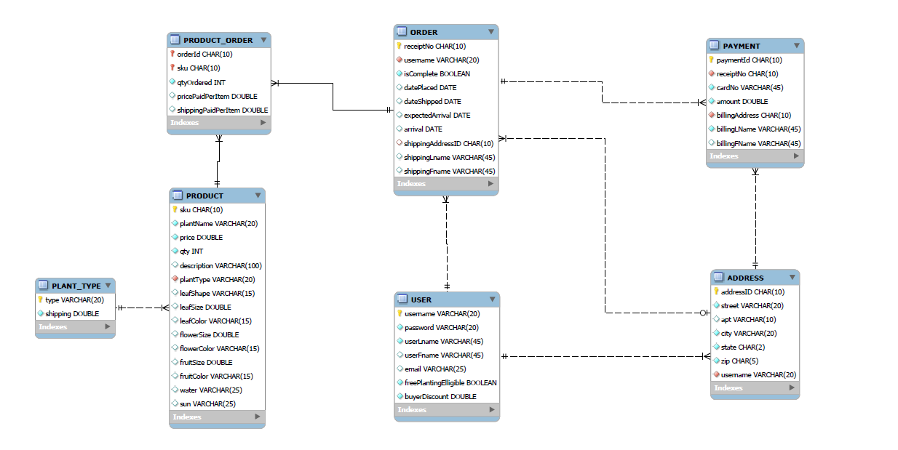
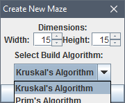
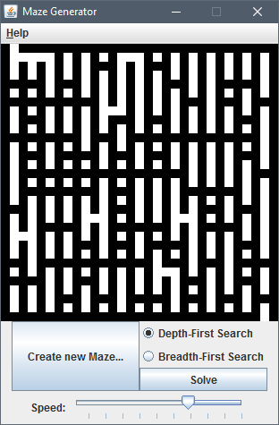
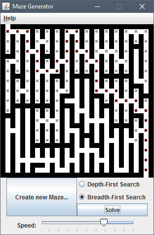

Tabitha Stein's Portfolio
Here are some of my projects. Click on the headers to view
source code.
-
Database Design and Application
Designed and normalized a
MySQL database for a mock plant nursery business and built a simple
website connecting to it in PHP. Sessions allow customers to login,
use a shopping cart, create purchase orders, and view invoices.

-
Java program that
losslessly compresses and decompresses text to a compression ratio
of ~2.8 using Huffman coding and custom implemented data structures
including a hash table with linear probing and an array-based
priority queue.
-
Interactive Java program with a Swing GUI that builds a maze with
user-selected dimensions and algorithms on screen and then solves
it, using either Prim's or Kruskal's algorithm to build it, and
Depth First or Breadth First search to solve it. Exhibits
understanding of data structures and basic graph theory.
  
-
C program that allocates and manages a block
of memory on the heap using custom implemented malloc and free
functions. Demonstrates understanding of memory management, pointer
manipulation, structs, and designing ADTs in C.